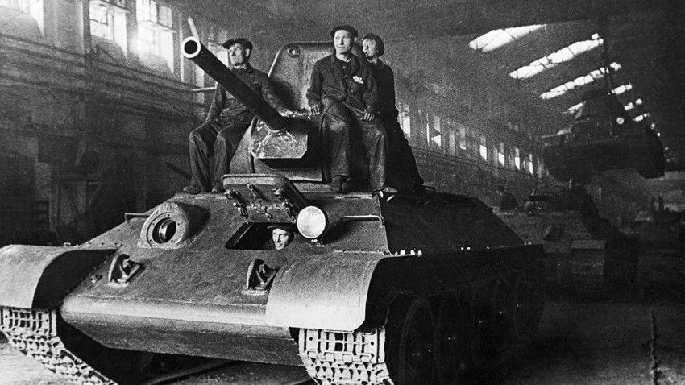
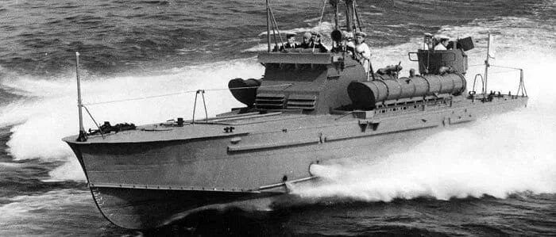

Великая Отечественная война 1941–1945 годов стала тяжелейшим испытанием для всего советского народа. Победа ковалась не только на фронте, но и в тылу: миллионы людей, в том числе женщины, подростки и старики, самоотверженно трудились на заводах, фабриках и в колхозах, обеспечивая армию всем необходимым.
Тюменская область в годы войны стала важным тыловым регионом. Сюда были эвакуированы десятки предприятий из западных областей СССР, здесь наращивали выпуск продукции местные заводы. Люди работали по 12–14 часов в сутки, часто в тяжелейших условиях, без выходных, отдавая все силы ради общей Победы.
изучить и представить историю промышленных предприятий Тюменской области периода Великой Отечественной войны и рассказать о подвиге тружеников тыла, работавших на этих заводах.


Таким образом, слаженная работа всех регионов — от промышленных гигантов Урала до отдалённых тыловых областей вроде Тюменской — обеспечила устойчивое снабжение Красной Армии и стала одним из ключевых факторов Победы.